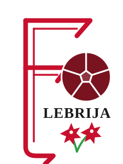

Historia, colores y sentimiento de un club que es de Lebrija.
El Club Atlético Antoniano representa a Lebrija con sus colores rojo y blanco desde hace décadas. Un club de pueblo, de cantera y de afición, que se gana su sitio temporada tras temporada a base de trabajo y humildad.
La grada del Municipal es nuestra seña de identidad: un ambiente que aprieta los noventa minutos y convierte cada partido en casa en una fiesta rojiblanca.


El muro rojiblanco que no falla. La grada del Antoniano empuja al equipo cada jornada y hace del Municipal un fortín.
Abonos y entradas en la plataforma oficial del club. Empuja al equipo desde el Municipal.
Conseguir mi entrada